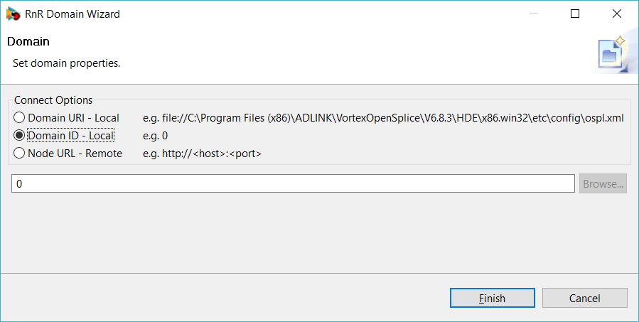
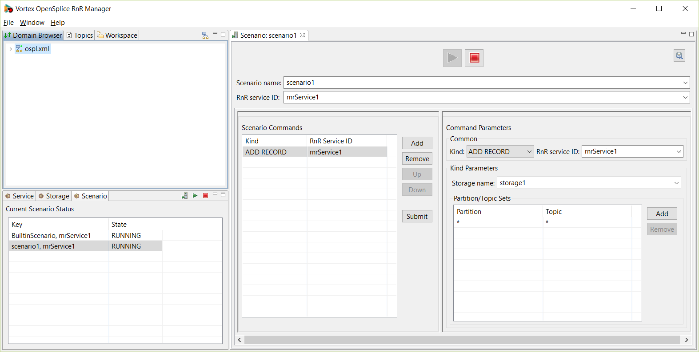
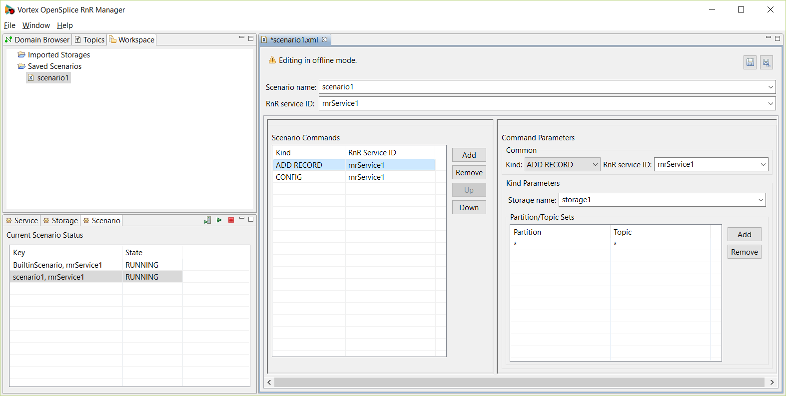

4. Using the Record and Replay Manager¶
RnR Manager does not need to be installed on a system with Vortex OpenSplice; it just needs to connect to a computer running Vortex OpenSplice with RnR Services configured.
4.1. RnR Manager Overview¶
4.1.1. Starting RnR Manager¶
RnR Manager is started by executing the startRnRManager script, located in the eclipse directory of the RnR Manager install directory. The script’s purpose is to ensure the proper setting of the Vortex OpenSplice environment variables prior to application launch.
The script allows for command line options to be passed to the application. Any command line options accepted by an Eclipse application are also accepted by RnR Manager. A particularly useful option is -data <directory>, which allows a user to specify a custom directory use as the RnR Manager workspace, in case the default directory is shared or write protected.
Example of starting RnR Manager with a non default workspace location:
<path-to-RnRManager>/startRnRManager.sh -data /home/user/rnrworkspace
<path-to-RnRManager>\startRnRManager.bat -data C:\Users\user\rnrworkspace

- Path arguments to the start script must be absolute paths.
4.1.2. Views¶
The RnR Manager supports various views to monitor the state of a connected domain. It also provides two editors.
These views and editors provide users with the ability to manage OSPL record and replay functionality. Additionally, record and replay data can be queried, and edited.
The views are:
- Domain Browser
- Service Status
- Storage Status
- Scenario Status
- Imported Storages
The editors are:
- Scenario Editor
- Storage Editor
Each view and editor has a detailed section to describe its features and intended usage.
RnR Manager Overview
{kind=link}
4.1.3. Preferences¶
RnR Manager preferences can be set using the main Window/Preferences menu.
4.1.3.1. OpenSplice¶
This preference page enables you to set the OSPL_HOME path for the RnR Manager if one is not set for the environment.

- RnR Manager must be restarted for this preference to come into effect.
OpenSplice Preferences page
{kind=link}
4.1.3.2. Partition/Topic Filters¶
The Partition/Topic Filters page enables you to specify which partitions and topics you would like to filter out in the general UI display. For example, any topics that are filtered out would not be seen in the in dropdowns used to list topics or in the Topics view.
Partition/Topic Filters Preferences page
{kind=link}
{kind=link}
4.1.4. Help¶
Various help actions are available from the main Help menu. These include actions for managing licenses, checking for updates, and product About... information.
{kind=link}
4.2. Domain Browser¶
The Domain Browser is used to define and connect to a domain. It also provides information about domain nodes, and the services the nodes support.
Domain Browser
{kind=link}
4.2.1. Defining a domain¶
To define an OSPL domain, click on the button in the top right corner of the Domain Browser.
Add Domain button

The RnR Wizard dialog will open. Multiple domain connection options are provided:
- A local domain can be connected to using an xml file or by specifying a domain id.
- A remote domain can be connected to using the node URL.
RnR Domain Wizard
{kind=link}
4.2.2. Domain Connect¶
Once a domain has been defined, an entry will appear in the Domain Browser.
To connect, double-click on the entry, or right-click to display the domain menu and choose Connect.
Connect to Domain
{kind=link}
When Connect is clicked, an attempt is made to connect to the RnR Services of the selected domain. If successful, the domain icon will change to and you will be able to expand the domain to browse the nodes.
{kind=link}
RnR Manager needs to be connected to the RnR Services of a domain in order to manage the recording and/or replaying of sample data.
- RnR Manager can only connect to one domain at a time.
4.2.3. Domain Disconnect and Delete¶
To disconnect or delete a domain, right-click on the domain to display the Domain menu.
4.3. Service Status¶
The service status view lists the current state of the OSPL RnR services available to the currently connected domain.
The list can be sorted by Key or State by clicking on the column header.
Service Status view
{kind=link}
4.4. Storage Status¶
The storage status view lists the current state of the OSPL RnR storages available to the currently-connected domain.
The list can be sorted by Key or State by clicking on the column header.
Storage Status view
{kind=link}
4.4.1. Creating a new storage¶
To create a new storage, click on the Add new storage button in the top right corner of the view to open the Create Storage dialog.
Add new storage button
{kind=link}
Create Storage dialog
{kind=link}
A wizard runs, with the input fields required for creating and configuring a new RnR storage.
The RnR Service ID field specifies for which service the storage will be created.
The Storage name field specifies what name the RnR service will recognize the storage by.
(See also Storage Attributes below.)
Clicking on Finish will create the storage. The Storage status view should be updated with a new entry for the newly-created storage.
4.4.1.1. Storage Attributes¶
When creating new storages or reconfiguring existing storages, such as when using the Create Storage wizard, the following attributes can be set:
- File name -
- The file name and path on the RnR service’s local filesystem in which it will keep the storage data. Relative paths are relative to the RnR service’s process working directory. File names have no rules or restrictions for file extensions; file names can have any extension, or no extension if required.
- Storage type -
- The encoding format for the storage. The file formats available are CDR (binary) and XML. The CDR format is more efficient (compact) than XML.
- Max file size -
The maximum size per storage file. When approaching the maximum size while recording, a new storage file is automatically created with a sequence number appended to the filename. The active file is also switched transparently while replaying from a storage that contains multiple data files (eg. if file name is "file", the name sequence is file, file0, file1, etc.).
Valid max size is any positive integer in denominations of bytes, kilobytes, megabytes, or gigabytes, up to a maximum value of 2^64 - 1 total bytes. Leaving the field empty, or inputting the value 0, is considered to be unlimited file size.
4.5. Scenario Status¶
Record and Replay is based on Scenarios. Scenarios are used to logically discriminate between different recording and replaying command sequences. A scenario is an instance of the scenario topic, a group of commands sharing the same scenarioName.
The Scenario status view lists the current state of the OSPL RnR scenarios available to the currently-connected domain.
The list can be sorted by Key or State by clicking on the column header.
Scenario Status view
{kind=link}
4.5.1. Open Scenario Editor¶
To open an empty scenario editor, click on the Create scenario button in top right corner of the scenario status view.
Please refer to Scenario Editors for more information on the Scenario Editor.
Create scenario button
{kind=link}
4.5.2. Starting Scenario(s)¶
To start a scenario or set of scenarios, click on the Start scenario(s) button to open the Start Scenario(s) dialog.
Start scenario button
{kind=link}
The wildcard character ‘*’ (asterisk) is supported.
Start Scenario(s) dialog
{kind=link}
A start scenario command is executed using the parameters specified in the dialog.
4.5.3. Stopping Scenario(s)¶
To stop a scenario or set of scenarios, click on the Stop scenario(s) button to open the Stop Scenario(s) dialog.
Stop scenario button
{kind=link}
The wildcard character ‘*’ (asterisk) is supported.
Stop Scenario(s) dialog

A stop scenario command is executed using the parameters specified in the dialog.
{kind=link}
4.6. Topics – One Click Record¶
The Topics view displays all of the DDS system topics that are available for recording. This view enables the user to start recording quickly using the Record Topic(s) dialog. Default parameters for the recording are provided for the selected topics.
To verify the status of the recording, the storage and scenario views can be viewed. The scenario editor can also be opened for the scenario.
The Topics list
{kind=link}
4.6.1. To Record a Topic¶
Step 1
Select one or more topics to record in the topic list.
Step 2
Right-click and choose Record... to open the Record Topic(s) dialog.
Topics selected for recording
{kind=link}
Step 3
Modify the default parameters if required and click on OK.
Record Topic(s) dialog parameters
{kind=link}
4.6.2. The Record Topic(s) Dialog¶
Default parameters are provided in the dialog in order to provide ‘one click’ functionality. These default parameters can be edited if required.
Partition/Topic pairs
The partition/topic pairs listed in the dialog reflect the selection in the Topics view when the dialog is opened.
The partitions can be modified by selecting from a drop-down list. The topics are not editable.
Record Topic(s) dialog Partition parameter
{kind=link}
The fields are:
- RNR Service ID –
- Specify the RNR Service ID parameter.
- Scenario Name –
Specify the scenario name. By default if one topic is chosen, a name that reflects the topic is used. Otherwise a generic record name is provided.
The currently-known scenarios in the DDS system are checked, and a scenario name is provided where no current scenarios of that name are known.
- Storage Name –
A default storage name is provided that matches the scenario name. If that storage is already known to the DDS system, a warning message is provided at the top of the dialog.
The storage name can be modified to be any string; a drop-down list is provided to allow for the selection of existing storages.
- Truncate existing storage –
- If this option is checked, a truncate command will be added for the specified storage. Otherwise, no truncate command is submitted.
- Create new storage –
- If this option is checked, the storage specified by the Storage name field will be created/configured with the specified storage attributes. See Storage Attributes for more information.
4.7. Scenario Editors¶
The actions of a Record and Replay service are organized in scenarios.
A scenario is an instance of the scenario topic, a group of commands sharing the same scenarioName. Each service subscribes to the command topic and uses a content filter to only process commands with an rnrId matching the service name (or ‘*’).
It is possible to create an intricate nesting of scenarios by defining a scenario that includes control commands targeting other scenarios.
RnR Manager has two editors related to scenarios. These editors are used to view and edit the commands of a scenario.
- Scenario Editor –
- Enables viewing, adding, and editing scenarios in the DDS system.
- Scenario File Editor –
- Enables viewing and editing of scenario data that is persisted using an xml file. The scenarios are saved as xml, and can be loaded into the DDS system as required.
4.7.1. Overview of the Scenario Editor¶
The scenario editor is used to view and edit the commands of a scenario within the DDS system.
The scenario editor can be opened from the Scenario Status view by any of the following actions:
- double-clicking on a selected scenario in the table
- right-clicking on a selected scenario in the table and then choosing Open
- clicking on the Create Scenario button
The Scenario Editor
{kind=link}
Scenario Editor elements:
Start and Stop buttons
The Start and Stop buttons, when clicked, submit the Start and Stop commands for the specified scenario and RnR service ID. These commands are published with a durability setting of VOLATILE.
Scenario name and RnR service ID
A new scenario name can be entered, or an existing scenario can be selected from the drop-down list.
Scenarios with the same scenario name can exist on multiple rnr services. The RnR service ID is also specified to identify the appropriate scenario. The wildcard character ‘*’ (asterisk) can be used to denote all rnr services.
Scenario Commands
The scenario commands table displays all commands for a scenario with the specified RnR service ID.
Command Parameters
The command parameters section displays the values associated with the selected command in the scenario commands table.
4.7.2. Overview of the Scenario File Editor¶
The scenario file editor can be used to edit the commands of a scenario and save them to an xml file. This xml file can later be loaded and submitted to a DDS scenario.
The scenario file editor can be opened from the Workspaces view by any of the following actions:
- double-clicking on a scenario file (under the Saved Scenarios folder)
- right-clicking on a selected scenario file and then choosing Open
Workspace Saved Scenarios
{kind=link}
The Scenario File Editor
{kind=link}
Scenario File Editor elements:
Save and Save As... buttons
The Save button saves the current xml file.
The Save As... button saves the scenario to a new file and opens a new scenario file editor.
Scenario name and RnR service ID
A new scenario name can be entered, or an existing scenario can be selected from the drop-down list.
Scenarios with the same scenario name can exist on multiple rnr services. The RnR service ID is also specified to identify the appropriate scenario. The wildcard character ‘*’ (asterisk) can be used to denote all rnr services.
Scenario Commands
The scenario commands table displays all commands for a scenario with the specified RnR service ID.
Command Parameters
The command parameters section displays the values associated with the selected command in the scenario commands table.
4.7.3. Re-sizing the Editors¶
Full View
In order to maximize the view of an editor, double-click on the editor tab.
Scenario Editor tab
{kind=link}
To restore the regular view, click on the ‘restore’ button, or double-click again on the editor tab.
Resizing an Editor
{kind=link}
Resize Editor groups
The widths of the Scenario Commands and Command Parameters groups can be changed by dragging the border with the mouse.
Resizing Editor groups
{kind=link}
4.7.4. Scenario Editor Features¶
A Scenario Editor
The scenario editor displays the current state and the existing commands of a scenario in the DDS system.
- Existing commands for a specific scenario are displayed and are not editable.
- New commands can be added and submitted.
The functionality provided by the editor changes depending on the state of the scenario.
The state of a scenario can also be determined by viewing the scenario in the Scenario Status view.
4.7.4.1. Running vs. Stopped Scenarios¶
4.7.4.1.1. For RUNNING scenarios:¶
The Start button is disabled, the Stop button is enabled.
The Submit button is enabled.
Previously-submitted commands are displayed in the scenario commands table, but are ‘view only’. A visual indicator of this is that the font color is light gray. These commands can not be removed or edited.
Editable and non-editable commands
{kind=link}
4.7.4.1.2. For STOPPED scenarios:¶
The Start button is enabled, the Stop button is disabled.
The Submit button is disabled, as it is not necessary. All commands are submitted if the Start button is clicked.
Previously-submitted commands displayed in the scenario commands table that were uneditable while the scenario was in the RUNNING state become editable again when in the STOPPED state.
4.7.4.2. Adding new commands¶
To add a new command, click on the Add button in the Scenario Commands section.
Specify the appropriate parameters for this new command in the Command Parameters section.
- If a scenario is already in the RUNNING state, click on the Submit button to submit the command or commands.
- If a scenario is in the STOPPED state, click on the Start button at the top of the editor to submit all the new commands and start the scenario.
A Running Scenario
{kind=link}
4.7.4.3. Existing commands¶
- Once a command has been submitted for a scenario, it cannot be deleted or edited.
4.7.4.4. Removing commands¶
The Remove button is only enabled if a command is editable.
Only newly-added commands are editable.
4.7.4.5. Ordering commands¶
The Up and Down buttons allow for the commands to be re-ordered, if the selected command is editable.
Alternatively, the editable selected command can be moved by dragging and dropping it in the commands table.
Only newly-added commands are editable in running Scenarios. If a scenario is stopped, then all commands can be re-ordered.
4.7.4.6. Duplicating commands¶
Scenario commands can be duplicated using Copy and Paste buttons available by right-clicking them to bring up the context menu.
Users can copy any command, which will copy all of the settings included in that command and place it on RnRManager’s clipboard.
Users can only paste a copied command where the “Paste” context menu entry is enabled. Pasting a command will insert it after a selected command, however users cannot insert commands after already submitted commands in a running scenario; they will have to stop the scenario to do that similar to the re-ordering of the commands in the previous section.
To paste a command:
- Select the command after which you want to insert it
- Right click on that command
- Press the “Paste” button
All scenario commands can be duplicated, whether they have been submitted or not in both Live and Offline mode in the Scenario Editor.
4.7.4.7. Validation¶
Commands that have invalid parameters are highlighted with red text in the scenario commands table. Individual invalid command parameters also have their labels highlighted with red text.
If the command is edited to correct the parameters, the entry in the scenario commands table will no longer be highlighted with red.
The Submit and Start buttons will do nothing if there are validation errors.
Invalid command parameters
{kind=link}
4.7.4.8. Save As...¶
The scenario editor has a Save As... button in the top-right corner.
Scenario Editor Save As... button
{kind=link}
The Save As... functionality enables the saving of a scenario’s commands and command parameters as an xml file that is not known to the DDS system.
Please refer to the next section, Scenario File Editor Features, for more information on saving scenarios to files.
4.7.5. Scenario File Editor Features¶
The Scenario File Editor
4.7.5.1. Creating New Files¶
Scenario Editor Save As
A new scenario file can be created by clicking on the Save As... button in the top right corner of the scenario editor. This will save the commands specified in the scenario editor to an xml file.
This allows for the saving of a specific DDS system scenario to be loaded at a later date.
New Scenario File
A new file can be created by right-clicking on a folder under the Saved Scenarios directory structure in the Workspace view and choosing New Scenario File....
New Scenario File
{kind=link}
4.7.5.2. Editing Commands¶
To add a new command, click on the Add button in the Scenario Commands section.
Specify the appropriate parameters for this new command in the Command Parameters section.
To remove a command, click on the Remove button in the Scenario Commands section.
4.7.5.3. Load Scenario¶
A scenario file can be quickly loaded and submitted into the DDS system.
Step 1
Select the xml file, right-click and choose Load Scenario.
Load Scenario
Step 2
Specify merge options in the Load Scenario wizard.
Load Scenario wizard
If a senario with the same name already exists, the wizard offers these merge options:
- Overwrite existing scenario –
- The existing scenario with the same name will be stopped (if not already stopped) and disposed.
- Rename scenario in file –
- The scenario name in the file will be changed, and that scenario name will be loaded.
- Automatically create referenced storages –
- Create any storages referenced in the file if they do not already exist in the DDS system.
A new scenario editor opens and the commands from the file are displayed.
{kind=link}
Step 3
Click on Play to submit the scenario commands to the DDS system.
4.7.5.4. Validation¶
Commands that have invalid parameters are highlighted with red text in the scenario commands table. Individual invalid command parameters also have their labels highlighted with red text.
If the command is edited to correct the parameters, the entry in the scenario commands table will no longer be highlighted with red.
- A scenario file can be saved with invalid parameters.
4.7.6. Command Parameters¶
To view or edit the command parameters of a scenario command, choose the command in the Scenario Commands table. The values associated with that command will populate the scenario editor’s Command Parameters section. If the command is editable, the parameters can be modified.
Common Parameters
Various command types are supported. To specify the command type, use the dropdown box entitled Kind.
The RnR service ID is also a common parameter for all command kinds.
Kind Parameters
The Kind Parameters section is where all the command kind-specific parameters are edited or viewed.
The command kinds supported are:
Add RecordAdd ReplayRemove RecordRemove ReplaySet Replay SpeedTruncateStartStopSuspendConfig
4.7.6.1. Add Record¶
The add record command is used to specify an interest to record data to a storage.
Add Record parameters
{kind=link}
The parameters are:
- Storage name –
- The name of the storage in which the data is to be stored. If the storage cannot be resolved, the command is ignored. To assist you, a dropdown list of recognized storages is provided.
- Partition/Topic Sets –
- One or more partition/topic sets can be added to define the record interest.
Wildcards are supported: ‘?’ will match a single character and ‘*’ will match any number of characters. If expressions (partially) overlap, data will only be recorded once.
4.7.6.2. Add Replay¶
The add replay command is used to specify an interest to replay data from a storage.
Add Replay parameters

Add Replay time ranges
{kind=link}
Add Replay QoS transformations
{kind=link}
The parameters are:
- Storage name –
- The name of the storage from which the data will be replayed. If the storage cannot be resolved the command is ignored.
- Use original timestamps –
- With the default value of true, when a sample is recorded, its original write and allocation timestamps are preserved. When this sample is replayed, it will be delivered to readers with these original timestamps. Depending on resource limits and QoS settings, readers may discard the replayed data if data with more recent timestamps is available. By setting useOriginalTimestamps to false, the timestamps will be updated with the current time upon replay.
- Skip to first sample –
- By default this value is false and when a sample matches interest expressions but doesn’t match any of the supplied time-ranges, the Record and Replay service tries to mimic original timing behaviour by sleeping until the next sample is evaluated based on record timestamps. Sometimes this is not the required behavior and the service should simply skip all non-matching samples and start replaying immediately the first sample that matches an interest expression and time-range. This behaviour can be enabled by setting skipToFirstSample to true.
- Partition/Topic Sets –
One or more partition/topic sets can be added to define the replay interest.
Wildcards are supported: ‘?’ will match a single character and ‘*’ will match any number of characters. If expressions (partially) overlap, data will only be published into DDS once.
- Time Ranges –
Specifying time ranges is optional.
Time ranges are used in combination with partition/topic sets to select a subset of data available in a storage for replay. Each time range is applied to each partition/topic set. A sample read from a storage is only replayed if its partition/topic can be matched against the partition/topic sets and its record-time can be matched against the time-ranges. The time ranges are optional; when omitted, a sample is replayed when a partition/topic set matches.
- QoS Transformations -
Specifying QoS transformations is optional.
A series of transformations to apply to each sample’s QoS upon replay. Transformations are only applied for replay samples that have matched the partition/topic set AND the time ranges (if specified). The supported transformations types and their valid values are described in the tables below.
QoS Type Description Partition Partition in which the sample is replayed Deadline Deadline QoS policy Latency Latency budget QoS policy Ownership strength Ownership strength QoS policy (applies only to samples written with exclusive ownership-kind QoS policy) Transport priority Transport priority QoS policy Lifespan Lifespan QoS policy QoS Type Valid Values Partition Partition transformations are supported for non-empty partition names consisting of alphanumeric and special characters ‘-’, ‘/’ and ‘_’. Ownership strength
Transport priority
Any positive 32 bit integer. Deadline
Latency
Lifespan
A floating point value for seconds and nanoseconds. eg. inputting 10.5 is 10 seconds and 500000000 nanoseconds. Additionally, the string "Infinite" is also valid input, signifying the ‘infinite’ time period (2147483647.2147483647) The string value written to the Replacement Value column will be the new value of the QoS policy. Optionally, values in the Original Value column are taken as the filter to conditionally apply the transformation; e.g. for a Partition transformation with Replacement Value "p2" and Original Value "p1", all samples with partition "p1" will be transformed to partition "p2".
Note that the original value needs to be an exact match;
wildcards and expressions are not supported.
Time Range Copy and Paste
The time range record values can be copied from the storage editor and pasted into the scenario editor. Please refer to Selected Row(s) Menu for details of how to copy a time range.
To paste the record time range, Add a new time range. Select the time range in the Time Ranges table, and right-click and then choose Paste Record Time Range.
Paste Record Time Range
{kind=link}
4.7.6.3. Remove Record¶
The remove record command is used to remove a record interest from a storage.
Remove Record parameters
{kind=link}
The parameters are:
- Storage name –
- The name of the storage of which record-interest is removed.
- Partition/Topic Sets –
One or more partition/topic sets can be added to define the record interest(s) to be removed.
- Note that the partition/topic sets need to match those used previously in an add record command.
4.7.6.4. Remove Replay¶
The remove replay command is used to remove a replay interest from a storage.
Remove Replay parameters
{kind=link}
The parameters are:
- Storage name –
- The name of the storage of which replay-interest is removed.
- Partition/Topic Sets –
One or more partition/topic sets can be added to define the replay interest(s) to be removed.
Note that the partition/topic sets need to match those
used previously in an add replay command.- QoS Transformations -
Specifying QoS transformations is optional.
The QoS transformations to remove from the replay interest. If specified, a replay interest will no longer apply the transformation.
If any replay interest is to be removed completely,
the set of transformations should match exactly the set included in
add_replay command(s) responsible for adding the interest.- Time Ranges –
Specifying time ranges is optional.
The time ranges to remove. Similar to the add replay command, this parameter is optional. If this parameter is specified, only the interest that exactly matches the time ranges is removed. As a shortcut, if no time ranges are specified, any interest that matches the interest expressions in the remove replay command is removed regardless of the time ranges attached to that interest.
4.7.6.5. Set Replay Speed¶
The set replay speed command is used to change the replay speed of a storage.
Replay Speed parameters
{kind=link}
The parameters are:
- Storage name –
- The name of the storage of which to change the replay speed. If the storage cannot be resolved the command is ignored.
- Replay speed –
Floating-point value containing the new replay-speed. The following values have a special meaning:
-1 : Maximum speed
Delays between samples are skipped and the samples from the storage are inserted into DDS as fast as possible.1 : Same speed
Replays samples with the same timing characteristics as when originally recorded.0 : Pause the storage
No samples are replayed until the speed is increased.The default replay speed is 1 (samples are replayed with the same timing characteristics as when originally recorded).
4.7.6.6. Truncate¶
This command can be used to clear a storage.
When recording samples to an existing storage, the data is appended. If instead the required behaviour is to overwrite the storage, the truncate command can be used to remove the data recorded to the storage during previous sessions.
- Note that the truncate command can only be executed if the storage isn’t busy recording and/or replaying data. Thus is may be neccessary to first publish remove record/replay commands, in order to remove all interest from a storage so that it gets closed by the RnR service, before the truncate command can be successfully processed. The Storage Status view can be used to verify the state of the storage.
Truncate parameter
{kind=link}
The parameter is:
- Storage name –
- The name of the storage to clear.
4.7.6.7. Start¶
The start command instructs the service to start processing "scenario name". The service will publish a status update that changes the state of the scenario to RUNNING. If the target scenario is already known to the service, and is in the suspended state, a start command causes the scenario to resume processing commands, changing the scenario status from SUSPENDED to RUNNING.
Start parameter
{kind=link}
The parameter is:
- Scenario name –
- The name of the scenario to start.
4.7.6.8. Stop¶
The stop command stops the execution of a scenario, including any recording and/or replaying that was defined as part of that scenario.
Stop parameter
{kind=link}
The parameter is:
- Scenario name –
- The name of the scenario to stop.
It is important to understand that a scenario, once stopped, cannot be started again.
However, it is possible to start a new scenario with the same name as the stopped scenario. If any commands of the original scenario were published as transient data they will be delivered to and processed by the new scenario, giving the impression that the scenario has been re-started.
4.7.6.9. Suspend¶
The suspend command suspends the processing of commands by the scenario. This enables applications to submit a number of commands to a scenario, without any immediate effects. When the scenario is resumed all new commands are processed as if they were published in a batch although in reality they may have been published with varying intervals.
Suspend parameter
{kind=link}
The parameter is:
- Scenario name –
- The name of the scenario to suspend.
4.7.6.10. CONFIG¶
The config command is used to modify the runtime configuration of an RnR service.
config : Sequence of KeyValue objects.
A config command can be used to add a storage to the service or modify properties of an existing storage. Storages can also be configured in the OpenSplice configuration file, but config commands provide the opportunity to create and configure storages dynamically.
A single config command can apply to multiple storages, if the config sequence consists of multiple elements. The key of the KeyValue object should always be ‘Storage’.
CONFIG command
{kind=link}
One or more storage configurations can be specified in the CONFIG command.
- Name –
- The name used to identify the storage in Record and Replay commands.
- Filename –
- The file used to store XML data. The filename may include a relative or absolute path. If a path is omitted, the storage file is created in the current working directory.
- Kind –
This attribute sets the format of the storage file. The data can either be stored in XML or CDR format.
- Note that when changing the Kind of an existing storage it is recommended that a TRUNCATE command be issued first so that the storage file does not contain data of both formats.
- Max file size -
- This optional attribute specifies a maximum storage size for individual files. Exceeding a single file size rolls the storage over to a new numbered index file. No value or 0 indicates unlimited file size. Valid input is any positive integer not greater than 2^64 -1 (in bytes). The value can have a suffix to indicate magnitude: K``(ilobyte), ``M``(egabyte) or ``G``(igabtye); for example, ``10M results in 10485760 bytes. The suffix is not case sensitive.
- Statistics –
- This optional attribute specifies whether statistics should be maintained for this storage.
- Interval –
- This attribute specifies the publication interval of the statistics belonging to this storage, in a Record and Replay storage statistics topic. The publish interval is a value in seconds but may also be set to -1, which means that the statistics are published when the storage is closed. Note that a value of 0 means that statistics are never published for this storage.
- Reset –
- This attribute enables you to reset the current values of statistics belonging to the storage. Note that this only makes sense in a configuration command for an existing storage, since new storages created from the OpenSplice configuration file always start out with empty statistics.
4.7.7. BuiltinScenario¶
4.7.7.1. OpenSplice BuiltInScenario¶
Since commands are targeted at a service and a scenario, the service must start an initial scenario. If it did not, there wouldn’t be anything to address commands to.
During startup, the service starts this initial scenario, called the BuiltinScenario. This is a special scenario that is always running while the service is operational. It serves as the starting hook for any new scenarios. To run a new scenario, a start command must be published for the BuiltinScenario. Like any scenario, the BuiltinScenario can also process other commands like record and/or replay commands.
- Note that the BuiltinScenario cannot be stopped.
Since one can assume that the BuiltinScenario is always available and running, it is a safe choice to address config and control commands to the BuiltinScenario. Especially in a dynamic and distributed environment, in which DDS is regularly used, this can be helpful when interacting with the service through scripts or perhaps when injecting commands stored in a persistent store.
4.7.7.2. BuiltinScenario in RnR Manager¶
The scenario editor disables the start and stop functionality for the BuiltinScenario.
Start and Stop actions are also disabled in the Scenario Status view.
4.8. Storage Data¶
The OpenSplice Record and Replay service enables the recording and replaying of data. The service records the data to storage xml files. These xml files can get quite large, and can be difficult to query and read.
RnR Manager provides a Storage Editor that makes it easier to query, view and update this storage data.
On import, the xml storage files are converted to a database file. The database can then be queried and updated. Updated data can be exported back into the OpenSplice Record and Replay service storage xml format if required.
4.8.1. Workspace - Imported Storages¶
The starting point for viewing storage data is the Workspace view.
To import storage data, navigate to the Workspace view and select the Imported Storages folder. Right-click to display a menu with options for manipulating storage database files.
Imported Storages view
{kind=link}
4.8.2. Database File Management¶
The Imported Storages folder displays the database files that have been imported. The files can be managed by using the menu options provided in the view. These menu options are accessible by right-clicking on the items in the view.
{kind=link}
These database files are created in a workspace project maintained by the RnR Manager, which provides facilities to open, copy, paste, delete, and create new folders within this workspace.
4.8.3. Import Storage¶
To import OpenSplice record and replay storage data, open the Import Storage dialog by choosing the Import Storage... option from the right-click menu. (A folder must be selected in the view.)
Import Storage
{kind=link}
To import:
Step 1
Browse to and select your local storage file.
If storage file names were configured with a relative path, the RnR service creates the storage files relative to its process working directory.
Using the file chooser, select the .meta file associated with the storage. The storage data file is automatically resolved.
Step 2
Specify the database file name. The file will be created in the selected folder.
Step 3
If necessary, decrease the batch size. The default batch size is 5000.
A batch counter is used to limit the number of samples loaded into memory. If the import is unsuccessful, and/or ‘out of memory’ exceptions are occurring, reduce the batch size number.
4.8.4. Export¶
To export OpenSplice record and replay storage data, open the Export Storage dialog by choosing the Export Storage... option from the right-click menu. (A database file must be selected in the view.)
On export a new OpenSplice storage is created and the sample data contained in the imported database file will be written to this storage.
4.8.4.1. Storage Parameters¶
The storage parameters are specified on the first page of the Export Storage wizard.
Export Storage - Create Storage
{kind=link}
If RnR Manager is currently connected to a DDS domain, the storage attributes are editable, and clicking on the Finish button configures a new storage with the specified storage attributes. If RnR Manager is not connected, only the file name attribute is editable, and clicking Finish only does the data export to file. See Storage Attributes for further information.
If necessary, decrease the batch size. The default batch size is 10000.
A batch counter is used to limit the number of samples loaded into memory. If the export is unsuccessful, and/or ‘out of memory’ exceptions are occurring, reduce the batch size number.
4.8.4.2. Sample Set Parameters¶
The second page of the wizard enables you to export a subset of the sample data contained in the database. You can also edit the actual database file to contain the appropriate subset using the storage editor. The ability to specify subset parameters is an additional feature of export.
All unique partition/topic sets of the database file are displayed. You can choose to exclude any of these sets by unchecking it the list.
Additionally you can define a time range for the export. Any data samples that do not fall within the time range are excluded.
Export Storage Samples
{kind=link}
4.9. Storage Editor¶
Once a storage has been imported, the database file can be queried and updated using the Storage Editor.
The storage editor is opened by double-clicking on the database file in the Imported Storages folder in the Workspace view. It can also be opened automatically on import.
The editor is comprised of two pages. The first page is used to define the query parameters. You can specify query parameters to view subsets of the sample data. The second page displays the sample data that meet the query parameter criteria.
Storage Editor
{kind=link}
4.9.1. Query Parameters¶
4.9.1.1. Field Selection¶
This section is used to select the data fields (columns) that you would like to see displayed in the data page table.
The Record and Replay node lists the fields that are written to each record and replay sample.
The Message node lists the fields that are written with each sample.
The other nodes contain the fields that are specific to each MetaType or topic.
4.9.1.2. Where Clause¶
The where section can be used to defined SQL-like where conditions.
This section is optional. If no entries are added, no additional conditions are added when running the query and populating the data page.
Operator
To define a where condition an operator must be added. The operator can be an AND or an OR.
To add an operator, click on the Add Operator button. By default, AND is selected. To add OR, select the cell, then choose the OR item in the dropdown menu.
Add Operator
{kind=link}
Each operator must have at least one child clause for the query to be valid. If this condition is not met, a red icon is displayed to indicate a problem. The Run Query button will not be enabled unless all validation problems on the query page are resolved.
Invalid AND
{kind=link}
Clause
To add where selection criteria, add one or more clauses to your operator. Each clause contains a field, an operator and a value.
- Field –
A database field or metaType field. Available fields are provided in a dropdown list.
Clause field
- Clause Operator –
Various comparison operators are available for selection in a dropdown list.
Clause Operator
- Value –
- The expected value of the database field.
{kind=link}
{kind=link}
Each clause must have a defined field and value. If this condition is not met, a red icon is displayed to indicate a problem. The Run Query button will not be enabled unless all validation problems on the query page are resolved.
Invalid Clause
{kind=link}
Valid Condition
{kind=link}
4.9.1.3. Time Range (message.writeTime)¶
By default the time range is set to all times. A start and/or end time can be defined to query samples within a specific time range.
4.9.1.4. Load¶
Many of the storage files have a large amount of data. For larger files, it is not always possible to load all of the data into memory. For these cases, samples can be incrementally loaded into memory.
The number of samples to load at a time is specified in the Load # field.
You can then use the Next and Previous buttons on the data page to view the samples incrementally.
- Note: Any edits made to loaded data will not be retained when the Next and Previous buttons are clicked. Such edits must be saved explicitly prior to loading next or previous samples.
4.9.1.5. Order By¶
The data display can be ordered by data fields. By default, the order is done using the message.writeTime fields. You can add any data field to the order by criteria.
4.9.1.6. Data¶
The data page contains one table that displays the samples that meet the query criteria. Each row is one sample.
The columns are resizable. The columns can also be re-ordered by dragging them in the table.
To get the full name of the column, hover on the column header with the mouse.
Values can be edited in the table on a per cell basis.
To change the data that is displayed, specify different query parameters on the query page, and click on the Run Query button.
Data page
{kind=link}
{kind=link}
{kind=link}
4.9.1.8. Next and Previous¶
The Next and Previous buttons are enabled when the samples are being loaded incrementally.
Please see Load for details of load functionality.
Next and Previous buttons
{kind=link}
4.9.1.9. Undo, Save and Save As...¶
Undo, Save, and Save As... buttons
{kind=link}
The buttons are:
- Undo —
- Undo all changes to the database file since the last save.
- Save —
- Save all changes to the database file.
- Save As... —
- Save the currently loaded samples into a new database file.

Table Of Contents
- 4. Using the Record and Replay Manager
- 4.1. RnR Manager Overview
- 4.2. Domain Browser
- 4.3. Service Status
- 4.4. Storage Status
- 4.5. Scenario Status
- 4.6. Topics – One Click Record
- 4.7. Scenario Editors
- 4.8. Storage Data
- 4.9. Storage Editor